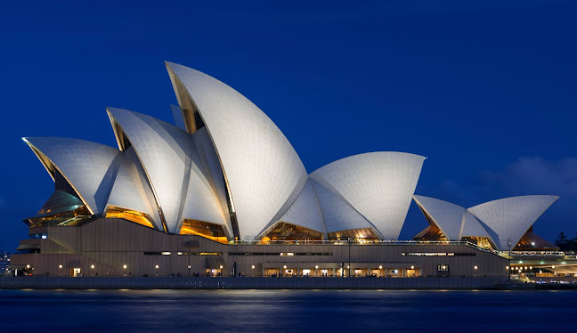
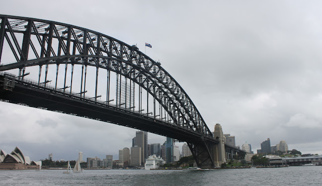
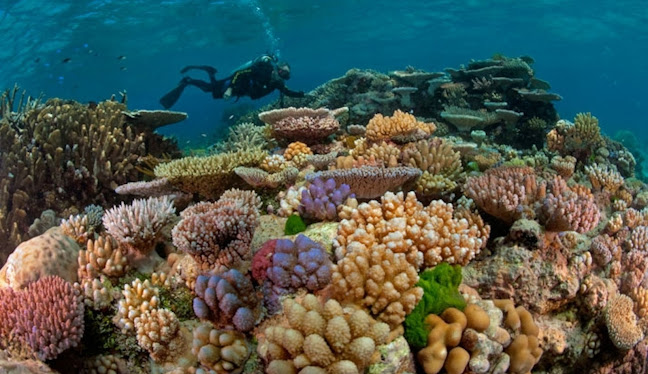
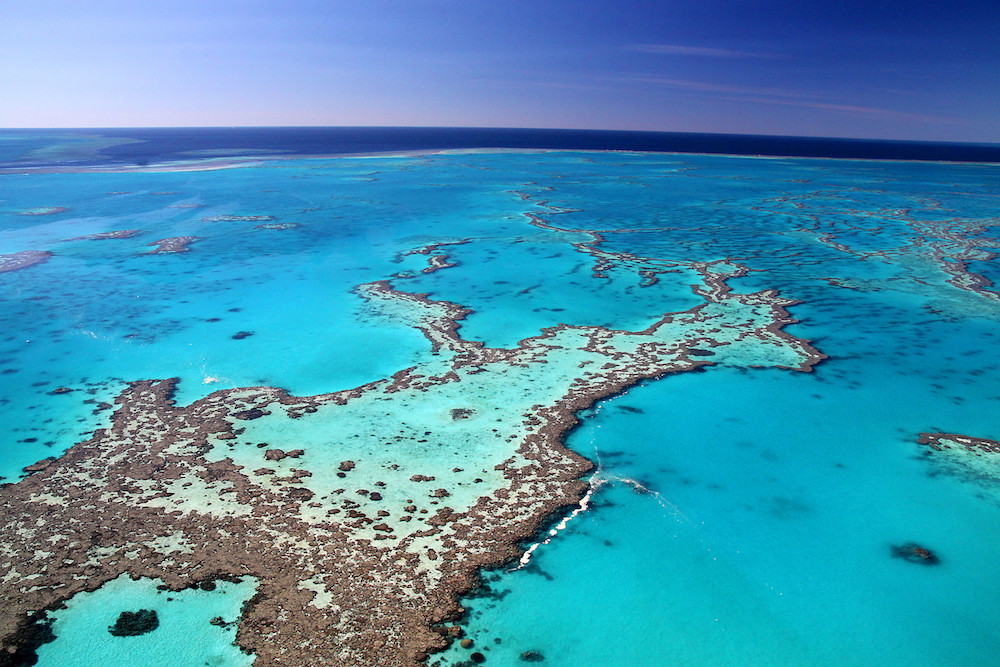
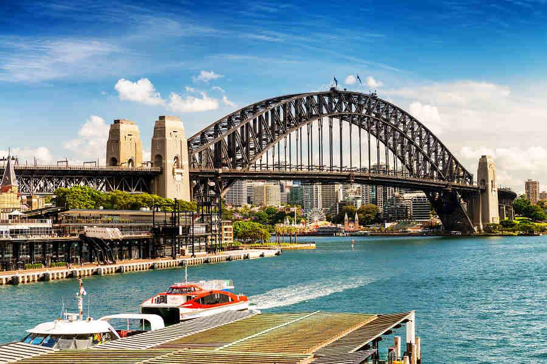
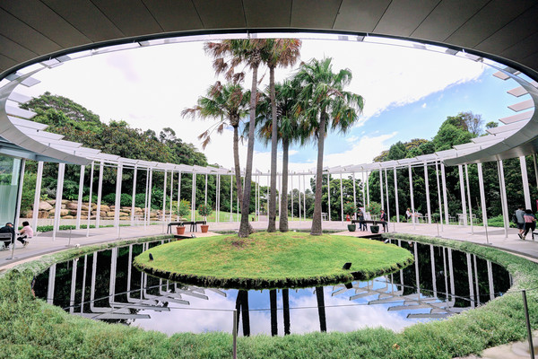
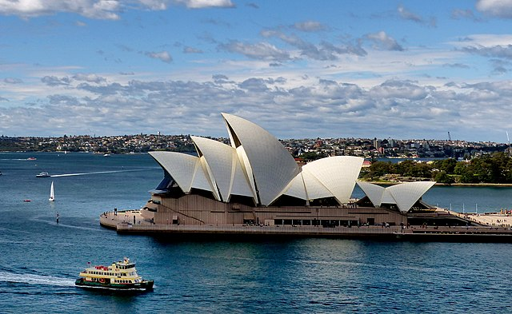
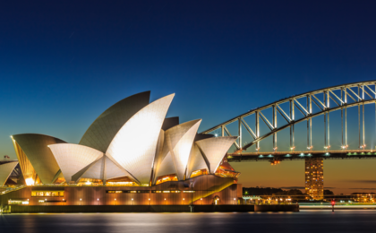

大洋洲



澳大利亞
- 大堡礁
- 官網 : http://greatbarrierreef.org/
- 門票 : 免費
- 開放時間 : 全年開放
- 交通 : 到達凱恩斯的飛機很多。想要出海的話需要先到凱恩斯碼頭再乘坐游輪，大部分公司都提供付費的酒店接駁服務。
- 雪梨歌劇院
由600多個大大小小的珊瑚礁島組成，色彩斑斕，美麗無限，其中心形的珊瑚礁島已成為大堡礁的標誌性景點。大堡礁一年四季都可以遊覽，每年的5月-10月是最好的季節， 這期間天氣比較穩定，天氣也不至於太熱，而且是澳洲的觀鯨季，運氣好的話出海還可以看見鯨的身影。

雪梨最著名的地標，聯合國教科文組織列為世界文化遺產，坐落於雪梨港灣，旁邊是綠意盎然的雪梨植物園，被藍天綠地和大海環抱著。於1973年啟用至今， 是20世紀的偉大建築工程之一。由丹麥建築師設計，外觀極具革命性和創新的設計彷彿是巨大的貝殼般，從遠處遙望就像是一艘港灣中的巨大帆船與雪梨港灣大橋相呼應。
附近景點

岩石區, 新南威爾斯
岩石區是雪梨的發源地，昔日的石造建築與倉庫，都已改建成餐廳、精品店、手工藝店、酒吧和藝廊等設施。 毗鄰環形碼頭、飽覽港灣大橋的優美風光，擁有眾多古老建築歷史文化、琳琅滿目的紀念品店、工藝品店、 主題店以及有歷史意義的酒吧。
了解更多

皇家植物園
在此可以眺望雪梨三寶(雪梨歌劇院、雪梨港灣大橋、雪梨塔)，這裡還是雪梨著名的名信片景點， 您可拍到著名的雪梨歌劇院及港灣大橋一起入鏡的美麗港灣風光。另外還有著名的麥爵理夫人石椅。
了解更多門票
成人AUD20 ; 優待票:14
開放時間
每週一至週六9:00─20:30，週日的表演則售票至開演前兩個半小時。
交通
➢ 可搭巴士,火車或渡輪到circular Quey。
➢ 搭乘公共汽車或市區計程車，在歌劇院站下車。

